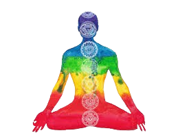

História
Os corpos sutis são uma concepção presente em diversas tradições filosóficas, religiosas e esotéricas que descreve a existência de níveis ou camadas energéticas que coexistem com o corpo físico. Essas estruturas invisíveis seriam responsáveis por funções mentais, emocionais, espirituais e energéticas, formando um sistema complexo de manifestação da consciência além da matéria densa.

Contexto originário
No contexto filosófico grego, a teoria de um veículo para a alma, ou de corpo sutil, visava explicar como o princípio imaterial e incorpóreo, a alma (psyche), se conectava à realidade material de um corpo grosseiro. Os relatos doxográficos atribuem tanto a Platão quanto a Aristóteles uma doutrina já postulada sobre isso. Na formação conceitual, encontra-se forte influência da definição de pneuma avançada por Aristóteles, em que ela mediaria a atividade da psique à atividade motora do corpo; para ele, a pneuma não é idêntica à alma, porém é conectada a ela no momento do nascimento e a carrega. Em crítica à teoria da alma de Platão, Aristóteles afirmava a necessidade de um "corpo instrumental (organikon)" para que ela pudesse operar e se mover.
Esse corpo também seria composto de elementos ("natural", physikôn),[3] porém "diferentes e mais divinos" do que aqueles do corpo material.[4] Talvez sejam verdadeiros antigos testemunhos, como o de Cícero, que atribuíam a Aristóteles a origem da afirmação de que pneuma era composta do quinto elemento: quintessência ou éter.
Além do mais, a pneuma era transmitida pelo sêmen durante a procriação como uma substância quente e aérea onde se localizava as almas nutritiva, sensitiva e imaginativa, e Aristóteles (em Da Geração dos Animais, 736b36-737a) afirma que ele é "análogo ao elemento que pertence às estrelas [isto é, ao éter]".[5] Nisso, afirma que o sêmen possui um "corpo diferente e mais divino", do elemento etéreo do Céu que ele também chama de "primeiro corpo" (prôton sôma).[6][7] Há evidências também de que Aristóteles utilizava da analogia platônica da carruagem e do Demiurgo timoneiro para descrever Deus sobre o globo terrestre como um cocheiro; por exemplo, conforme Pseudo-Plutarco em Placita (século II): "Aristóteles diz que o Deus maior é uma forma separada, montada sobre a esfera do todo, que é um corpo etéreo (aíthérion soma, αἰθέριον σῶμα), o qual ele chama de o quinto".
Em resumo, Aristóteles propôs que a alma, embora imaterial, precisa de um corpo sutil — o pneuma — para interagir com o corpo físico. Esse veículo seria composto por uma substância etérea, distinta da matéria comum, e ligada à alma desde o nascimento. Assim, o pneuma serve como elo vital entre o espiritual e o material.
VoltarTipos de corpos sutis
A ideia de múltiplos corpos sutis varia conforme a tradição cultural e espiritual. No entanto, há uma estrutura recorrente em sistemas esotéricos como o hinduísmo, o teosofismo e o ocultismo ocidental:
- Corpo etérico: Considerado a primeira camada energética, associado à vitalidade e à força de vida. Age como uma ponte entre o corpo físico e os níveis mais sutis.
- Corpo emocional (ou astral): Relacionado às emoções, sentimentos e desejos. É frequentemente associado à experiência dos sonhos e da projeção astral.
- Corpo mental:Responsável pelo pensamento, raciocínio e processos mentais. É subdividido em inferior (intelecto concreto) e superior (mente abstrata)
- Corpo causal (ou corpo da alma):Associado ao registro das experiências de vida e à identidade espiritual. Acredita-se que contenha o propósito de vida ou "karma".
- Corpo espiritual (ou búdico/átmico): Descrito como a camada mais elevada, responsável pela conexão direta com o divino ou com a consciência universal.
Conexão entre os Corpos Sutis e o Desenvolvimento Espiritual
A compreensão dos corpos sutis oferece um mapa valioso para o autoconhecimento e o crescimento interior. Ao reconhecer a existência dessas camadas energéticas, é possível trabalhar de forma mais consciente no equilíbrio entre os aspectos físico, emocional, mental e espiritual. Por exemplo, práticas como meditação, yoga e cura energética atuam diretamente nesses corpos, harmonizando as emoções no corpo astral, refinando os pensamentos no corpo mental e fortalecendo a conexão com o divino no corpo espiritual. Essa integração permite uma vida mais alinhada com propósitos elevados e uma maior sintonia com as leis universais.
A Interdependência dos Corpos Sutis na Evolução Humana
Nenhum desses corpos funciona isoladamente; eles estão interligados em uma rede dinâmica que influencia diretamente nossa experiência de vida. Desequilíbrios no corpo emocional, como traumas não resolvidos, podem afetar o corpo mental, gerando padrões de pensamento negativos, enquanto bloqueios no corpo etérico podem impactar a saúde física. Por outro lado, quando cultivamos virtudes como amor, sabedoria e compaixão, ativamos os corpos superiores (causal e espiritual), que, por sua vez, auxiliam na transformação dos corpos inferiores. Essa interdependência revela a importância de uma abordagem holística no caminho espiritual.
A Jornada da Consciência através dos Corpos Sutis
Os corpos sutis representam estágios de expansão da consciência, desde a identificação com a matéria até a união com o transcendente. Enquanto o corpo causal guarda as lições kármicas que impulsionam nossa evolução, o corpo espiritual nos lembra de nossa essência imortal. Dominar essa hierarquia energética não significa negar o físico ou o emocional, mas integrá-los em uma síntese harmoniosa. Assim, o estudo desses corpos vai além da teoria esotérica — torna-se um convite à prática, à transformação interior e, finalmente, à realização do Self superior, onde todas as camadas se dissolvem na unidade cósmica.
VoltarRelação com o chakras
Na tradição hindu e em muitos sistemas derivados, os corpos sutis estão intimamente ligados ao sistema dos chakras, que são centros de energia localizados ao longo da coluna vertebral. Cada chakra corresponde a aspectos específicos da vida física, emocional e espiritual, e sua ativação ou equilíbrio influencia diretamente o estado dos corpos sutis.
Por exemplo:
O chakra cardíaco (Anahata)está associado ao corpo emocional e ao sentimento de amor e compaixão.
O chakra frontal (Ajna), também conhecido como "terceiro olho", está ligado ao corpo mental superior e à intuição.
O chakra coronário (Sahasrara), no topo da cabeça, é o ponto de conexão com o corpo espiritual e com estados de consciência superior.
O funcionamento harmônico dos chakras é visto como essencial para a integridade dos corpos sutis e da saúde holística do ser.
VoltarAplicação práticas
A compreensão e o trabalho com os corpos sutis têm diversas aplicações práticas, especialmente em contextos espirituais, terapêuticos e energéticos:
Cura energética: Terapias como Reiki, Cura Prânica e Bioenergética atuam diretamente nos corpos sutis, buscando equilibrar ou desbloquear fluxos energéticos que influenciam a saúde física e emocional.
Projeção astral: Também chamada de desdobramento, é a experiência em que a consciência se separa do corpo físico e atua por meio do corpo astral em outros planos de existência.
Meditação e expansão da consciência: Práticas meditativas profundas são utilizadas para acessar níveis superiores dos corpos sutis, como o mental superior ou espiritual, com o objetivo de alcançar estados de iluminação ou autoconhecimento.
Autocura e harmonização: Técnicas como visualização criativa, alinhamento de chakras e mantras são aplicadas para fortalecer e purificar os corpos sutis.
Fontes e referências
Samuel, Geoffrey; Johnston, Jay (12 de abril de 2013). Religion and the Subtle Body in Asia and the West: Between Mind and Body (em inglês). [S.l.]: Routledge
Barcan, Ruth; Johnston, Jay (12 de abril de 2013). «Invisible, dispersed and connected. The cultural plausibility of subtle-body models in the contemporary West». In: Samuel, Geoffrey; Johnston, Jay. Religion and the Subtle Body in Asia and the West: Between Mind and Body (em inglês). [S.l.]: Routledge
Bos, Abraham P. (1 de junho de 2007). «The 'Vehicle of Soul' and the Debate over the Origin of this Concept». Philologus (em alemão) (1): 31–50. ISSN 2196-7008. doi:10.1515/phil-2007-0104
«Plato, Timaeus, section 42a». www.perseus.tufts.edu
Singer, Peter N. (2020). «Galen on Pneuma: Between Metaphysical Speculation and Anatomical Theory». In: Coughlin, Sean; Leith, David; Lewis, Orly. The Concept of Pneuma after Aristotle. Berlim: Edition Topoi. p. 269
Tieleman, Teun (10 de janeiro de 2022). «Presocratics and Presocratic Philosophy in Galen». In: Lammer, Andreas; Jas, Mareike. Received Opinions: Doxography in Antiquity and the Islamic World (em inglês). [S.l.]: BRILL
Mansfeld, Jaap (11 de setembro de 2018). «Heraclitus on Soul and Super-Soul. With an Afterthought on the Afterlife.». In: Mansfeld, Jaap. Studies in Early Greek Philosophy: A Collection of Papers and One Review (em inglês). [S.l.]: BRILL